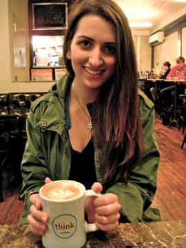

< < < Back
Haley Yael Firkser Is Another Champagne Socialist Who Ignores Her Own Privilege – Return Of Kings
Haley Yael Firkser, one of the chief instigators of the ongoing anti-Roosh Canadian witch hunt, is another peculiar case of a privileged feminist who calls for the destruction of “male privilege.” Throughout her attention-seeking activism, however, she has been very quiet about the considerable financial and employment privilege she enjoys, courtesy of her family’s thriving business.
It is convenient for her (and highly amusing for us here at ROK) that the current patriarch of her family inherited and then greatly expanded the Home Hardware chain in Toronto.
Like Jessica Lelièvre, Firkser believes the patriarchy institutionalizes the position of men over women. But how many women AND men have a father who can appoint them as the “Business Development Director” of one of the wings of their successful enterprise, despite their child having a liberal arts-style Bachelor’s Degree in Communication Studies (with a Minor in Judaic Studies)?
Firkser has more privilege than 99.5% of men, so how can she make a side career out of being outraged at “patriarchy”? Just as I said about Lelièvre, patriarchal capitalist modes of production have served Firkser’s interests very, very well.

“My dad owns the Home Hardware chain and I’m a Business Development Director because of that, but the patriarchy and male privilege oppress me!”
An interesting aspect of Firkser’s activism is her Jewish ethnicity. Even as far back as 25 years ago, it was recognized that Canadian Jews were four times more likely to earn above $75,000 annually than the rest of the population. In America, a similar jurisdiction to Canada, Jed Rubenfeld and Amy Chua recently outlined in The Triple Package how American Jewish households have roughly twice the median household income compared to Gentiles.
If we want to have a discussion about male privilege and patriarchy, we need to broaden our outlook. Right now, it perfectly suits Firkser and others to maintain a “privilege discourse” based on crude gender politics. It avoids damaging questions about her personal family privilege in particular.
Contrast this with Roosh, whose background is dual Iranian-Armenian. It beggars belief that Firkser, a Jew, has waited until now to go after so-called “misogynists” in such a public fashion, and the one she finally goes after comes from a Middle Eastern Shia Muslim family. Talk about picking your targets!
Because Roosh does not practice his ancestral Islam in a devout sense, Firkser can preach her Islamophobic intolerance in a publicly acceptable fashion. The Return of Kings proprietor’s beliefs are entirely analogous to those of hundreds of millions of traditionally-minded Muslims around the world, including hundreds of thousands in Canada. By attacking Roosh’s heartfelt beliefs, she is cowardly attacking theirs.
Privilege is multidimensional and Haley Yael Firkser has a lot of it
“Does my privilege look big in these glasses?”
Concordia-educated Firkser has had many more opportunities than the average Canadian or American male. From her business-owning grandfather and father, who slaved away for years to build the business that enabled her to get her plum post-graduation job, to her Jewishness, Firkser’s critique of patriarchy is beyond hypocritical. It is ironic that the system she wants to dismantle has effectively put her in the top one or two percent of the population in her early twenties.
Like many Asian-American and Indian-American families, the Jewish emphasis on education, particularly for one’s children, does, in my opinion, provide a generally superior means of social advancement and continued prosperity. Well, at least compared to the relative ham-fistedness of most Gentile households in trying to get their children to be ambitious and work hard.
That said, even if the progeny of these minority families work more diligently and pursue more academic opportunities, they’ve had the privilege of parental guidance and role models. It’s not as if they’ve had to work for that template themselves. It’s been instilled in them.
I myself do not claim to be Jewish. I am a Gentile but one with sizeable Jewish ancestry. Some of the surnames appearing in my family true, and there are a few, are as Jewish as Rosenfeld and Silverberg, possessed by rabbis, Holocaust victims and modern-day, not so well known Israeli musicians.
Consistent religious intermarriage meant that I was born dual Protestant-Catholic. Statistically-speaking, despite the good fortune of my middle-class upbringing, my position would in all likelihood have been better still if I had been born into a Jewish family in America, Canada, Australia or Britain. These are realities that Firkser chooses to ignore.
She thinks “Would you bang?” threads should be criminalized

“As Business Development Director, I always look ahead, but also to the side. Yeah, a side career rallying against the big bad patriarchy would be great.”
Firkser appeared on CBC‘s Daybreak radio program to talk about the “harassment” she has faced. In relation to “Would you bang?” threads on the Roosh V Forum, she said she was flabbergasted that the police hadn’t become involved. The implications are undeniable: talking about whether you would sleep with a woman, a hypothetical situation, should be criminalized according to Firkser.
Are such statements simply her speaking her beliefs, or, more narcissistically, a chance to both express herself and carve out a nice paid career as a SJW?
Not content with the overt hypocrisy of her background as an “anti-patriarchy” activist privileged in the job market because of her family, she wants to ensure a prohibition against men freely and innocuously discussing their sexuality. It comes as no surprise, therefore, that Firkser is going around retweeting purely made-up figures like this about sexual assault:
Where would Firkser be without her family privilege and the benefits it brings?

“If I were a rich girl… nah nah nah nah nah nah… oh wait, I am!”
These are Haley Yael Firkser’s course-based “qualifications” for her position as Business Development Director of Home Hardware Pest Control:
- Communication Technologies & Gender
- Intermedia II
- Sound I
- Film/Video I
- Youth and Media
- Media and New Technology
- Media Criticism
- Media and Cultural Context
- Public Relations
- The Religious Imagination
- Ancient Judaism
- Medieval Jewish Thought and Institutions
- Jewish Identity & Autobiography
- Sexuality & Public Discourse
- Women in Israel
- Religion & The Human Body
- Canadian Jewish Literature
- Reception Studies
- Self/Other: Identity & Ethics
- Alternative Media
- Introduction To Culture
- Hebrew (Ulpan)
- Responses to the Holocaust
- Holy War in Judaism, Islam and Christianity
- Dealing with Stress in Daily Life and in Emergency Situations
In and of themselves, there is nothing wrong with most of these courses, although the relative ambiguity of many of them, combined with left-wing academia, would make the majority highly ideological.
Fundamentally, how this has equipped Firkser for her current job role is beyond me. One can look at her resumé and perform a few internet searches about Home Hardware and you know beyond a shadow of a doubt that “the patriarchy” has given her everything she has.
The privilege of every feminist must be looked at

“It’s a hard life…”
It is comical that so many leaders of feminist witch hunts and other SJW projects come from the most privileged elements of society. My theory is that Jessica Lelièvre and Haley Firkser do not like the hard work required of conventional business owners or creators, so they opt for a “perpetual student mode”: the self-aggrandizement that comes with being university politicians and attention-seeking SJW media darlings.
Meanwhile, the legacies of daddy and granddaddy (and great-granddaddy in Lelièvre’s case) can be milked for all their worth. Family jobs a-plenty and other financial privileges follow these sorts of women. But for most of us dastardly men, we have to make our own way in the world. No multimillion-dollar families, just our own efforts and ambitions.
Anyone who attacks any form of privilege with a background like Haley Yael Firkser is nothing but a fraud.
Read More: Thin Privilege Doesn’t Exist